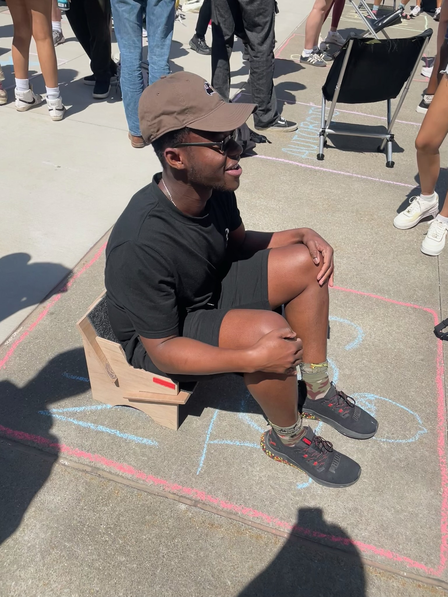

Physical prototype of the Tacti-Chair

Tacti-Chair design showcasing the puzzle-like assembly

- Tacti-Chair – tactile chair for visually impaired hikers
- Taco Bell – combat robot
- Python Game and App Projects – Sudoku and drawing app
- Rethink the Rink Make-a-Thon – Baklava-style neck guard
My work with the Carnegie Mellon Robotics Club includes an ongoing project with a small team of 4 where we build a 3lb combat Robot called TacoBell. This fearsome machine demands extensive use of CAD (SolidWorks), hand calculations of forces and torque, and design reviews.
Tacti-Chair is a recent project I undertook with a group of engineers. Our task was to make a chair for visually impaired hikers. With Yosemite National Park as our environment we set out to creating an easily transportable, tactile and strong chair. The Puzzle like Tacti-Chair was born out of our efforts to survey users and the national park, run hand and computer analysis on stresses and strain, and manufacture the chair.
Utilizing Python I created a New York Times inspired version of Sudoku and a Microsoft Paints Inspired App.


Necklava – Innovative Neck Protection for Hockey Players My team developed the Necklava, a balaclava-inspired neck guard designed to improve player safety without sacrificing comfort or mobility. As part of the Rethink The Rink 2024 challenge, we were tasked with creating better neck protection for hockey players following the tragic passing of former Pittsburgh Penguin Adam Johnson, which led to new safety mandates across leagues. We ideated, prototyped, and presented our solution to a panel of experts from the Pittsburgh Penguins, Covestro, Bauer Hockey, and Carnegie Mellon University's College of Engineering. Our design focused on ergonomics, advanced materials, and player usability, resulting in an innovative approach to safety.